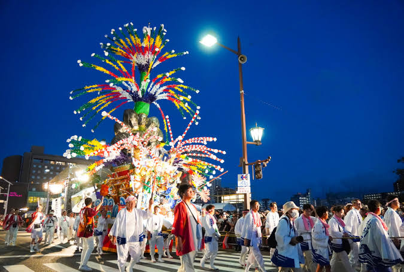

Wasshoi (ワッショイ) มนต์สะกดและจังหวะแห่งความสามัคคี

รากศัพท์และการวิเคราะห์ที่มา:คำนี้ไม่มีความหมายในพจนานุกรมญี่ปุ่นทั่วไป แต่มีทฤษฎีทางภาษาศาสตร์ที่น่าสนใจ 3 แนวทาง: 1.和を背負う (Wa o Shou): Wa แปลว่าความสามัคคี/สันติภาพ, Shou แปลว่าแบกรับ รวมกันหมายถึง "การแบกรับความสามัคคีของชุมชนไว้บนบ่า" 2.輪一緒 (Wa-Issho): Wa แปลว่าวงกลม (สื่อถึงความเป็นน้ำหนึ่งใจเดียว), Issho แปลว่าพร้อมกัน 3.ทฤษฎีภาษาฮีบรูโบราณ: นักประวัติศาสตร์บางกลุ่มเสนอว่าอาจเพี้ยนมาจากคำว่า Mashiach (เมสสิยาห์) ซึ่งหมายถึงการมาเยือนของพระผู้ช่วยให้รอด
ความเป็นมาและบริบททางสังคม:ในการแบกเกี้ยว Mikoshi ที่ทำจากไม้เนื้อแข็งและโลหะ ซึ่งมีน้ำหนักตั้งแต่ 500 กิโลกรัมไปจนถึง 2 ตัน และต้องใช้คนแบกพร้อมกัน 50–100 คน หากมีใครคนใดคนหนึ่งก้าวเท้าผิดจังหวะ เกี้ยวอาจล้มทับคนจนบาดเจ็บหรือเสียชีวิตได้ ในอดีตจึงต้องมี "ผู้นำจังหวะ" (Hyoshigi) ที่คอยตีไม้ให้สัญญาณ และให้ทุกคนตะโกนคำว่า Wasshoi ออกมาพร้อมกันเพื่อล็อกจังหวะฝีเท้าให้อยู่ในระนาบเดียวกัน
กลไกการใช้งานและหน้าที่ในงานเฟสติวัล: การควบคุมลมหายใจ: การตะโกนอย่างสุดเสียงช่วยให้คนแบกปล่อยลมหายใจและเกร็งกล้ามเนื้อท้องพร้อมกันทำให้เกิดแรงยกมหาศาล การผสานพลังทางจิตวิทยา: เมื่อรวมเข้ากับการสาดน้ำ (Mizukake) เสียงตะโกน Wasshoi ที่ดังก้องไปทั่วท้องถนนจะสร้างสภาวะภวังค์ร่วม (Collective Trance) ทำให้ทั้งคนแบกและคนสาดน้ำรู้สึกสนุกสนาน เพลิดเพลิน และลืมความเหน็ดเหนื่อยและความร้อนไปโดยสิ้นเชิง